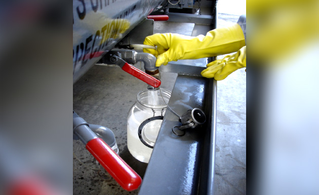

Session 8.7
Element Change Out Procedures
- Do not touch the Coalescer, Separator, Elements with bare hands.
- Use the supplied plastic bag of the element when handling the Coalescer element
- Remove plastic bags slowly
- Element change procedures shall be strictly in accordance with the manufacturers' instructions.
- Particular attention shall be given to washers, “O” rings and the torque requirements of all screwed assemblies as well as to the tightening of two (2) piece rod assemblies in side-opening horizontal type filters.
- Retaining rod threads shall be lubricated carefully with white petroleum or equivalent and tightened securely by hand before the required torque is applied.
- The element holding “spider” shall be securely fastened and torqued. It should not put undue side pressure on the element.
- It is recommended that flat screw based element seals be soaked in clean jet fuel for about ten minutes before installing the elements and applying torque on them.
- This procedure seems to minimize loss of torque in service; the loss of torque could easily allow the seals to by-pass.
8.7.1 Separator Testing or Change-Out Procedure
- DO NOT THROW PTFE-COATED (TEFLON) SCREEN SEPARATOR CARTRIDGES AWAY WHEN CHANGING COALESCERS.
- These separators are designed to eliminate the costly practice of replacing paper separators.
- Teflon separators may be retained in service for as long as their performance can be restored by scrubbing in accordance with their manufacturer’s instructions; the service life should be many years
- On all other occasions a vessel is opened for inspection, at least one (1) separator shall be removed inspected, tested and cleaned to ensure it is not disarmed and to assure prolonged, effective separation life.
- Separators may become DISARMED after continued exposure to surfactants in the fuel, so checking and cleaning is required
- When inspecting separators
- HANDLE THE CARTRIDGE CAREFULLY
- DO NOT TOUCH THE PTFE (TEFLON) SIDES
- Throughout the entire procedure, AVOID LETTING SCREEN COME IN CONTACT WITH YOUR BARE SKIN, particularly after the cartridge has been cleaned. Hold the cartridge by the end caps. If necessary to handle the screen during removal or installation, use a clean, dry, non-abrasive material, such as a poly-bag from one of the coalescers, between your hand and the screen.
- After removing the cartridge from the vessel, submerge it in clean fuel and gently scrub the entire screen surface with a soft bristle brush or a lint-free cloth.

- WATER TEST - Be sure that the separator is fuel-wetted before performing this test. Hold the cartridge by the end capat an angle, and gradually pour water over the entire screen surface. Do not spray the water and do not let it fall more than a distance of three inches before contacting the screen.
- The water will bead and roll off the surface of properly functioning separators (as it would on a freshly-waxed car). If this is the case, the separator has passed the Water Test and can be reused.
- If any portion of the PTFE-coated screen is wetted by the water (the water will seep into the pores of the screen; this is very obvious to the eye), the cartridge has failed the Water Test. The wetted area must be cleaned again (see Step 7), and the recleaned cartridge should pass the Water Test before it is reinstalled.
- If the separator passes the Surface Inspection and Water Test, rinse it thoroughly in clean fuel to remove traces of water. Let the separators air dry prior to reinstalling. If a separator fails the Surface Inspection due to visible nicks, cuts, or other flaws in the screen that can be caused by mishandling, they can be patched if they are smaller than 1⁄8 inch (size of a dot n). Use two-part epoxy base putty. Thoroughly clean the area with isopropyl alcohol before applying putty. ALWAYS REPEAT THE WATER TEST TO INSURE A GOOD PATCH. BE SURE THAT THE SEPARATOR IS FUEL-WETTED BEFORE PERFORMING THIS TEST.
- If a separator fails the Water Test due to visible wetted areas, try washing the cartridge with hot water. Use pressurized hot water from a tap or hose and thoroughly spray the wetted area. Scrubbing with a soft brush will often help in stubborn areas. Allow the cartridge to dry, then perform the Water Test again. If the cartridge continues to fail the Water Test, it must be replaced.
- If gaskets should become dislodged, thoroughly clean gasket and end-cap surfaces with a solvent such as MEK or Acetone. Apply a cyanoacrylate adhesive to the end cap. Place the gasket onto the end cap, applying pressure over the entire surface of the gasket. Let dry for approximately 30 seconds.
- REMINDER - While reinstalling the PTFE-coated screen separators, be sure to avoid handling the screen with your bare hands. If you must handle the screen, use a clean, dry, non-abrasive material, such as a poly bag. Be sure to remove all poly bags prior to closing vessel.
NOTE: The above cleaning instructions are also applicable to SYNTHETIC MEDIA SEPARATORS. SYNTHETIC MEDIA SEPARATORS can be cleaned a maximum of two times
